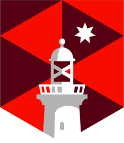

APPCAIR I / Radio-LM



Working on a novel pseudo replacement to RLHF through prompting. This project also involves
creating a modified model with this pseudo-RLHF and then uing it to find a Human-window of LLM explanation-understandability,
in corroboration with Donald Michie's work. We are testing this theory on Radiology/Med students. This work's presentation led to
the first prize in ACM event,
slides.
Results on the way ;)
APPCAIR II

This project is under review at a double-blind conference. Details soon.
DeepChem
Contributing to the DeepChem library. As of now I have contributed to the Introduction to Materials Science Tutorial. As well as helped with MolGAN and Normalizing Flow implementations in PyTorch. Work from here has been accepted at MoML 2024. Right now, I am developing tutorials for the same, as well as working on a GNoME implementation. Preprint on arxiv soon!
[RE] Teaching CLIP to Count to Ten

This is a student-led reproduction of the Google Brain paper Teaching CLIP to Count to Ten. We developed novel (incremental) augmentations to the loss function, which showed improvement in our small scale experiments. Apart from this, we created data processing pipelines and also made their evaluation dataset completely public. This work has been submitted to ReScience, so (again) preprint out soon!
Event Stream analysis of LiDAR data
This project is a part of my ongoing DAAD WISE Scholarship at RUB. Details soon.
Adaptive MoE Decoders

This project is a part of my ongoing Research Assistantship at the INK Lab, USC. Details soon.